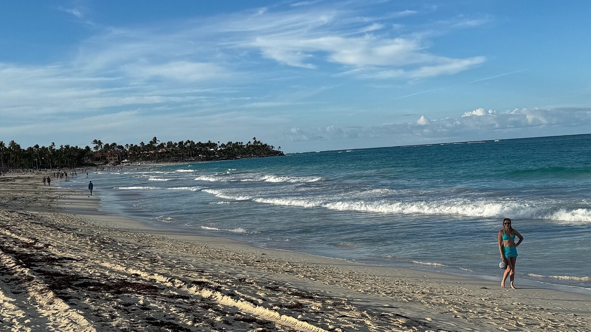

Beach days
Best beaches near Punta Cana and Cap Cana

The Punta Cana coast has very different kinds of beach days. You might be looking for calm water, a low-key lunch, space to walk, surfable waves, or a more energetic strip of sand. This short list helps you pick a direction instead of trying to do every beach in one trip.
Playa Blanca
Playa Blanca is an easy beach idea when you are staying in Punta Cana Village. It is known for white sand, calm turquoise water, and beachfront dining; from Dreamcatcher, it is about a seven-minute drive. It is a natural choice for an unhurried swimming-and-lunch day.
Juanillo Beach
Juanillo Beach is the nearby beach reference for guests at Cap Cana Happy Place, at roughly eight minutes by car. Think white sand, calmer water, and nearby beachfront restaurants. It suits a relaxed day where the beach is the main plan.
API Beach
Near Cap Cana Marina, API Beach is a beach-club-style option with calmer water, food, and a sunset-friendly setting. Consider it when you want a more built-in lunch or drinks plan rather than a completely open stretch of sand.
Macao Beach
Macao is a good choice for wide sand, a more open feel, local food stands, and waves that can be better for surf than the calmer beaches closer to Cap Cana. It is worth the longer drive when you want a change of scenery and are comfortable with a less sheltered ocean day.
Playa Bávaro
Playa Bávaro is the classic wide, lively Punta Cana beach: a long shoreline, bright water, and plenty happening nearby. Choose it if you want to combine time on the sand with the energy of the broader Bávaro area.
Stay near your kind of beach day
Compare our two homes by airport proximity, beach reference, and amenities.